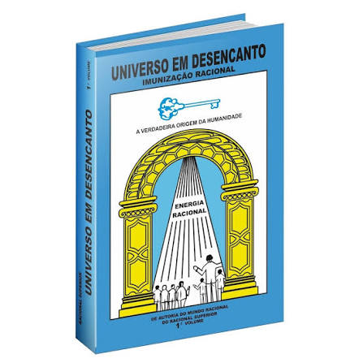
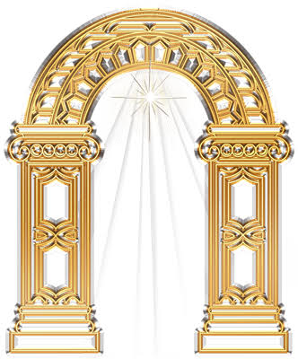

Universo em Desencanto
Conheça a verdadeira origem do ser humano, e desenvolva o raciocínio para ser um racional puro, limpo e perfeito!

O livro Deus
Esse é o livro Deus, esse livro é o livro do equilíbrio, esse é o livro do desenvolvimento do raciocínio.

O aparelho racional
Saiba como funciona a conexão do aparelho racional com o mundo racional através do desenvolvimento do raciocínio!

Imunização Racional
Compreenda o processo natural da Imunização Racional e o regresso definitivo ao nosso verdadeiro Mundo de Origem, o Mundo Racional!
📖 Os Livros Físico Universo em Desencanto
O estudo da Imunização Racional é feito diretamente nos livros físicos. A leitura e relergia diária no livro material ativam o seu raciocínio e a conexão com o Mundo Racional.
Como adquirir os seus exemplares:
Para conseguir os livros físicos do Universo em Desencanto, entre em contato com a sede ou com os pontos de divulgação oficiais da Cultura Racional mais próximos de você.
 Solicitar Livro Físico (WhatsApp)
Solicitar Livro Físico (WhatsApp)